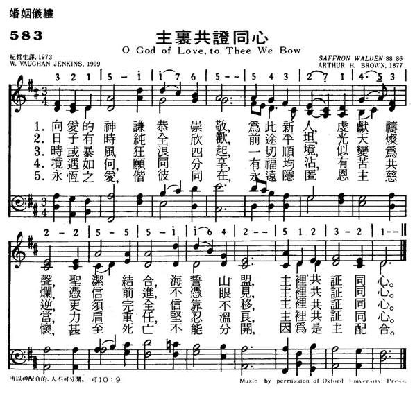
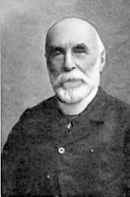

|
|
|
|
1 O God of love, to you we bow, 2 Whatever comes to be their share 3 Eternal love, with them abide; |
583主里共证同心
1.向爱的神谦恭崇敬，为此新人，虔献祷声，
圣洁结合，海誓山盟，主里共证同心。 2.日子有时纯全欣欢，前途平坦，光天灿烂， 慿信前进，不凭眼见，主里共证同心。 3.时或暴风狂浪四起，一切顺境，似变为逆， 更须完全信靠不移，主里共证同心。 4.境遇如何，愿同分享，有福均沾，有空共当， 力肩重任，坚忍温良，主里共证同心。 5.永�琱�爱，偕彼同在，永远隐匿恩主慈怀， 甚至死亡不能分开，因为是主配合。 |
|
https://www.mred365.cn/szxg/7586.html 
|
|
|
|
|


| Text: | 愛的神阿，在祢座前 (O God of love to Thee we bow) |
| Author: | William V. Jenkins |
| Short Name: | William Vaughan Jenkins |
| Full Name: | Jenkins, William Vaughan, 1868-1920 |
| Birth Year: | 1868 |
| Death Year: | 1920 |
Born: September 6, 1868,
Bristol, England.
Died: June 30, 1920, Bitton, Gloucestershire, England.
Jenkins attended Bristol Grammar School and became an accountant like his father. He was active in the mission field, and developed associations with the Tyndale Baptist Church, Highbury Congregational Church, and his own parish church in Bitton. He also served as secretary to the Adult School Union in Bristol, belonged to the National Council of the Adult School Movement, and helped compile the 1909 Fellowship Hymn Book.
Tune Information
| Title: | SAFFRON WALDEN |
| Composer: | Arthur Henry Brown (1877) |
| Meter: | 8.8.8.6 |
| Incipit: | 32151 16554 32143 |
| Key: | D Major |
| Copyright: | Public Domain |
| Short Name: | Arthur Henry Brown |
| Full Name: | Brown, Arthur Henry, 1830-1926 |
| Birth Year: | 1830 |
| Death Year: | 1926 |
Born: July 24, 1830,
Brentwood, Essex, England.
Died: February 15, 1926, Brentwood, Essex, England.

Almost completely self taught, Brown began playing the organ at the age 10. He was organist of the Brentwood Parish Church, Essex (1842-53); St. Edward’s, Romford (1853-58); Brentwood Parish Church (1858-88); St. Peter’s Church, South Weald (from 1889); and Sir Anthony Browne’s School (to 1926). A member of the London Gregorian Association, he helped assemble the Service Book for the annual festival in St. Paul’s Cathedral. He supported the Oxford Movement, and pioneered the restoration of plainchant and Gregorian music in Anglican worship.
Brown edited various publications, including the Altar Hymnal. His other works include settings of the Canticles and the Holy Communion Service, a Children’s Festival Service, anthems, songs, part songs, and over 800 hymn tunes and carols.
A Nuptial Blessing - (Michael Joncas)
A Time For Us - from "Romeo & Juliet" (N. Rota/L.Kusik/E.Snyder)
Abiding Love - (Gloria Roe)
All I Ask Of You - from "Phantom Of The Opera" (Andrew Lloyd Webber)
All I Have - (Beth Nielsen Chapman/Eric Kaz)
All In His Own Sweet Time - Duet (Cathy Spurr)
All My Life - Recorded by: Linda Ronstadt (Karla Bonoff)
All Of Me - Based on Isaiah 53:5 (Michael Sweet/Stryper)
Always - Recorded by: Atlantic Starr - Duet (Jonathan, David and Wayne Lewis)
Amazing Grace - (Arr. by: John Coats, Jr.)
An Irish Blessing - (Michael Patrick Murphy)
And Now We Join - Duet (Sten G. Halfuarson)
And On This Day - (Tina English)
Annie's Song - (John Denver)
Ave Maria - (Charles Gounod/Bach)
Ave Maria - (Franz Schubert)
Be Not Afraid - Based on Isaiah 43:2-3 and Luke 6:20 (Bob Dufford)
Because (You Come To Me) - (Edward Teschemacher)
Beginning Today - (M. Balhoff/D. Ducote)
Bless The Broken Road - Recorded by: Rascal Flatts
Blessed Are They - Based on Psalm 34 (Warren Hermodson)
Blest Are Those Who Love You - Based on Psalm 128 (Marty Haugen)
Bridegroom And Bride - (David Haas/Marty Haugen)
Call, The - (Ralph Vaughan Williams)
Can't Help Falling In Love - (George Weiss)
Candle For A Life-Time
Celtic Alleluia - Catholic (F. O'Carroll/C. Walker)
Closer Than A Heartbeat - (Claire Cloninger/Don Marsh)
Colour My World - Recorded by: Chicago (James Pankow)
Companions On The Journey - Based on Micah 6:8; Matthew 7:7 (Carey Landry)
Covenant Hymn - Based on Ruth 1:16 (Gary Daigle/Rory Cooney)
El Shaddai - Recorded by Amy Grant (Michael Card/John Thompson)
Endless Love - Duet (Lionel Richie)
Entreat Me Not To Leave Thee - (Charles Gounod)
Eternal Father, Strong To Save - (William Whiting/R.N. Spencer)
Evergreen - (Barbara Streisand/Paul Williams)
Father, We Come Today - (Rev. Carey Landry/M. Lesinski)
For All We Know - Recorded by: The Carpenters (Robb Wilson/A.James/Fred Karlin)
For You - (John Denver)
From This Moment On - Duet (Shania Twain/R.J. Lange)
Gather Your People - Based on I Cor. 12; Is. 2:3-4; 11:9 (Bob Hurd)
Gift Of Finest Wheat - (Robert E. Kreutz)
Gift Of Love, The - (Duet) Based on I Cor. 13 (Hal Hopson)
Give Me Forever (I Do) - (C.Cathcart/J.Tesh/J.Morrison/J.Ingram)
Go Now In Peace - (Don Besig/Nancy Price)
God Be With You - Tune: "All Through The Night" (David Haas)
God In The Planning - (John L Bell)
God Is Love - Based on I John 1:15, 3:2, 4:15; Psalm 33.6; Galatians 3:28 (David
Haas)
God, A Woman And A Man - (Lilly Green/E. Williams)
Greatest Of These Is Love, The - Based on I Cor. XIII (Roberta Bitgood)
Grow Old With Me - (John Lennon)
Guiding Me Guarding Me - Based on Psalm 121 (Michael Joncas)
Halle, Halle, Halle - w/Wedding Verse (Arr: John Bell)
Hawaiian Wedding Song - (Charles E. King/Dick Manning)
He Has Chosen You For Me - (Pat Terry)
Honestly - Recorded by: Stryper (Michael Sweet)
How Beautiful - (Twila Paris)
I Believe - (Ervin Drake/Irvin Graham)
I Could Never Promise You - (Don Francisco)
I Cross My Heart - Recorded by: George Strait (Steve Dorff/Eric Kaz)
I Have Loved You - (Michael Joncas)
I Just Fall In Love Again - (S.H. Dorff/L. Herbstritt/G. Sklerov/H. Lloyd)
I Lift Up My Soul - Based on Psalm 26 (Tim Manion)
I Love (But) Thee - (Edvard Grieg/Nelson Eddy)
I Loved Her First - Recorded by: Heartland (W. Aldridge/Elliot Park)
I Need Thee Ev'ry Hour - (Lowry)
I Swear - Recorded by: J.M. Montgomery (Gary Baker/Frank Myers)
I Will Be With You - (James E. Moore, Jr.)
I'll Still Be Loving You - (Todd Cerney/Pam Rose/M. Kennedy)
I'll Walk Beside You - (Alan Murray / Edward Lockton)
If - Recorded by: Bread (David Gates)
If I Loved You - from Carousel (Rogers/Hammerstein)
In This Very Room - (Ron and Carol Harris)
Jesu, Joy Of Man's (Our) Desiring - (Johann S. Bach)
Journeys Ended, Journeys Begun -
Joyful, Joyful, We Adore You - Tune: Hymn To Joy
Keeper Of The Stars - (D. Lee/D. Mayo/K. Staley/Tracy Byrd)
Like A Seal On Your Heart - (Rev. Carey Landry/M. Pizzuti)
Longer - Recorded by: Daniel Fogelberg (D. Fogelberg)
Lord You Have The Words - Based on John 6:68; Psalm 19:8-11 (Michael Joncas)
Lord's Prayer, The - (Albert Hay Malotte)
Lord's Prayer, The - (F. Peeters)
Lord's Prayer, The - (Michael Joncas)
Love Changes Everything - from Aspects Of Love (Andrew Lloyd Webber)
Love Story (Where Do I Begin) - (C. Sigman/F. Lai)
Mass Of Creation - Catholic (Marty Haugen)
Mine Eyes Have Seen The Glory -
Morning Has Broken - (Arr. by Cat Stevens)
Mother Beloved - (Daniel A. Lord)
My Only Love - Recorded by: Stattler Brothers (Jimmy Fortune)
My Prayer - (George Boulanger/J. Kennedy)
Never Be The Same - (Ron Griffen)
Nobody Loves Me Like You Do -
Not For Tongues Heavens Angels - (Michael Joncas)
Nuptial Blessing - (Richard Proulx)
O God Of Love - (William Vaughan Jenkins/Austin Lovelace)
O Perfect Love - (Joseph Barnby/Bill Simon)
Ode To Joy - (Ludwig Van Beethoven)
Oh Promise Me - (Clement Scott/R. De Koven)
On Eagles Wings - Based on Psalm 91 (Michael Joncas)
One Hand, One Heart - from West Side Story (Leonard Bernstein)
Only A Shadow - (Rev. Carey Landry/Arr. by M. Lesinski)
Our Blessing Cup - (Michael Joncas)
Our Love - Duet (S. Scott/T. Coomes/B. North)
Over All Other Virtues - (Vince Ambrosett)
Panis Angelicus - (Cesar Franck/Arr. by Charles P. Scott)
Power Of Love, The - Recorded by: Air Supply (M. Applegate/J. Rush/S. Derouse/G.
Mende)
Precious Lord, Take My Hand - (Thomas A. Dorsey)
Psalm 127 - (Chepponis)
Psalm 128 - (Robert Wetzler)
Sabbath Prayer - from Fiddler On The Roof (Jerry Bock/Sheldon Harnick)
Sometimes - Recorded by: Carpenters (Felice and Henry Mancini)
Song Of Ruth - Based on Ruth 1:16-17 (Donald J. Reagan)
Song Of Thanksgiving - Based on Psalm 116 (Michael Joncas)
Song Of The Body Of Christ - (David Haas)
Sunrise, Sunset - from Fiddler On The Roof (J. Bock/S. Harnick)
Taste And See - Based on Psalm 34 (James Moore, Jr.)
The Earth Is Full - Based on Psalm 33 (Marty Haugen)
The Keeper Of The Stars -
The Lord Bless You - (E.F. Morris/David Fehr)
The Lord Bless You And Keep You - Based on Numbers vi, 24 (John Rutter)
The Prayer - (C.B. Sager/D. Foster)
The Rose - (Amanda McBroom)
The Summons - (Kelvingrove/J.L. Bell)
This Day Was Made By The Lord - Based on Psalm 118 (Christopher Walker)
This Is The Day - Based on Psalm 117-118, Responsorial Psalm (Donald J. Reagan)
This Is The Day - Based on Psalm 118:24 (Michael Joncas)
This Is The Day - (Scott Wesley Brown)
Through The Eyes Of Love - from Ice Castles (Carole Bayer Sager/Marvin Hamlisch)
Time In A Bottle -
To Me - Duet (Mack David/Mike Reid)
Unchained Melody - Recorded by: Righteous Brothers (Alex North)
Unity Candle Song - (Joseph L. Sullivan/Raymond H.)
Walk Hand In Hand - (Johnny Cowell)
We Have Been Told - (David Haas)
We've Only Just Begun - Recorded by: Carpenters (Roger Nichols/Paul Williams)
Wedding Benediction, A - (Austin C. Lovelace)
Wedding Prayer - (Fern Glasgow Dunlap)
Wedding Song (There Is Love) - (Noel Paul Stookey)
Were You There? - (H.T. Burleigh)
When I'm With You - Recorded by: Sheriff (Arnold David Lanni)
When Love Is Found -
When You Say Nothing At All - (Don Schilitz/Paul Overstreet)
Where There Is Love - Based on I John 4:16, I Cor. 13:4-7,10,13 (David Haas)
Whither Thou Goest - (Guy Singer)
Wind Beneath My Wings - Recorded by: Gary Morris (L. Henley/J. Silbar)
With An Everlasting Love - Duet - Based on Jeremiah 31:3; Ruth 1:16-17 (Vince
Ambrosetti)
With This Ring - (John Sacco/Remus Harris)
With This Ring - (Roger Copeland)
With You I'm Born Again - Duet
Without Love - Based on I Cor. 13 (Allan Robert Petker)
You And I (Just) - Duet - Recorded by: Eddie Rabbitt (Frank Myers)
You Are Mine - (David Haas)
You Are Near (Yah-Weh) - Based on Psalm 139 (Dan Schutte)
You Needed Me - (Randy Goodrum)
You Raise Me Up - Recorded by: Josh Groban (R. Lovland/B. Graham)
You'll Never Walk Alone - from Carousel (Rodgers/Hammerstein)
Your Everything - Recorded by: Keith Urban (C. Lindsey/B. Regan)
Your Song - Recorded by : Elton John (Elton John/Bernie Taupin)